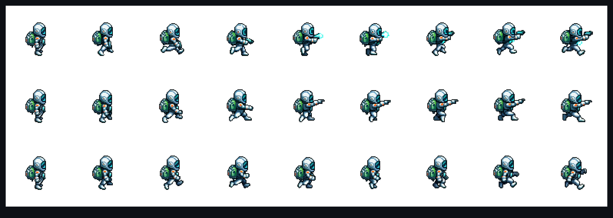

미감 PASS · 부착 가능
기기 판정 → 양산
weaver · M2 선행 · 무기 부착 de-risk
run + blaster "ready 포즈" 재생성 — 부착 시제
검증 결론(A): tucked-arm 러너엔 무기 쥘 손이 없어 단일 고정앵커가 모션 중 분리됨 → 오른팔 전방 ready 포즈로 east 애니 재생성(다리·몸통만 애니, 총-팔 안정). 무기 = 별도 스프라이트(조준 회전·발사 VFX 유지). 본 보드 = 실제 PixelLab 재생성 + blaster 손 부착 시제(매체 게이트 #8 — 실제 아트).
01
라이브 부착 리그 — 달리며 조준
design = 앵커·모션 개념 / unity = 소켓·반동·파티클
자동사격 조준
0°
전방 콘 ±35° (뒤·위 극단은 콘 제한 — spec §2.5)
표시
읽는 법
blaster = 손 앵커 parent · grip pivot 회전
머즐 글로우/발사 = unity 런타임 VFX
다리·몸통 = 애니 / 총-팔 = 안정
02
카테고리 4종 — 같은 손 앵커 리그
de-risk = blaster 1종만 / 나머지는 형태 확정·양산 대기🔵 blaster
원거리 · P1 · 본 시제
🔴 blade
근거리 · P2
🟡 launcher
대공 · P3
🟣 orb staff
특수 · P4
4종 실루엣 구분은 확정 사안(asset-manifest 에셋2). de-risk 하드게이트는 run + slide + blaster 하나로 좁혀 미감·조준·코너 안정을 본 뒤 양산 — 무기마다 캐릭터 재애니 없이 동일 손 앵커 리그로 스왑.
03
왜 빈손(empty)이 양산 베이스인가
실제 PixelLab 재생성 3종 · east 9f
run-ready-aim1행
무기·머즐 베이크 팔은 뻗지만 손에 총+머즐 글로우가 그려짐 → 별도 무기 오버레이·조준 회전과 충돌. 기각.
run-ready-empty2행 · 채택
빈손 그립 팔 전방 안정(프레임 2~8) + 손 비움 → blaster가 깨끗이 얹힘. 양산 베이스.
기존 run3행
tucked-arm 양팔이 몸에 붙음 — 무기 쥘 손 없음(검증 문서가 지목한 원래 문제).
04
부착 스펙 (unity 핸드오프)
손 앵커 (east, 88px)
60, 39 px
가슴 높이·전방. 기존 보드의 (47,51)=골반 오측을 정정. 미러 west = scaleX(-1).
키프레임
2~3 개
프레임 0~1 팔 상승 중 → 저위치, 2~8 전방 고정. 프레임별 전수 불요(verify 예측 일치).
무기 스케일 / 그립
~0.5× · grip(.40,.72)
blaster 48px → 핸드헬드 ~24px. grip pivot 중심 회전. 발사·머즐·피격 = unity VFX.
05
판정 · 잔여 리스크 · 다음
⚠ 잔여 리스크 (기기 판정 대상)
- 측면 러너 + 전방 무기 정지 스샷은 멋지나 — 실제 60fps 주행 중 느낌은 기기 확인
- 슬라이드 슬라이딩 태클 중 총-팔 어색 가능 → 가슴 tuck(색 유지) 처리 검증 (de-risk에 slide 포함)
- 조준 콘 뒤·위 극단각은 팔과 무기 벌어짐 → 콘 제한으로 회피(전방 플레이)
- 코너 임의각 벽주행 회전 시 리그 전체 트랙 접선 동반 — 안 튀는지
→ 다음 (verify 문서 de-risk 플랜)
- 디자인 ✅ run + blaster ready 재생성 (본 보드)
- + slide ready 포즈 재생성 (하드게이트 셋 완성)
- unity Play 씬 WeaponMount 시제 — 부착·미러 단위테스트·조준 회전·발사 VFX
- 기기 1회 판정 (유기성·조준·발사·미감) → 통과 시 4무기×전애니 양산
검증 (A) ready 포즈→
run+blaster 재생성 ✅→
slide 재생성→
unity WeaponMount 시제→
기기 판정→
양산